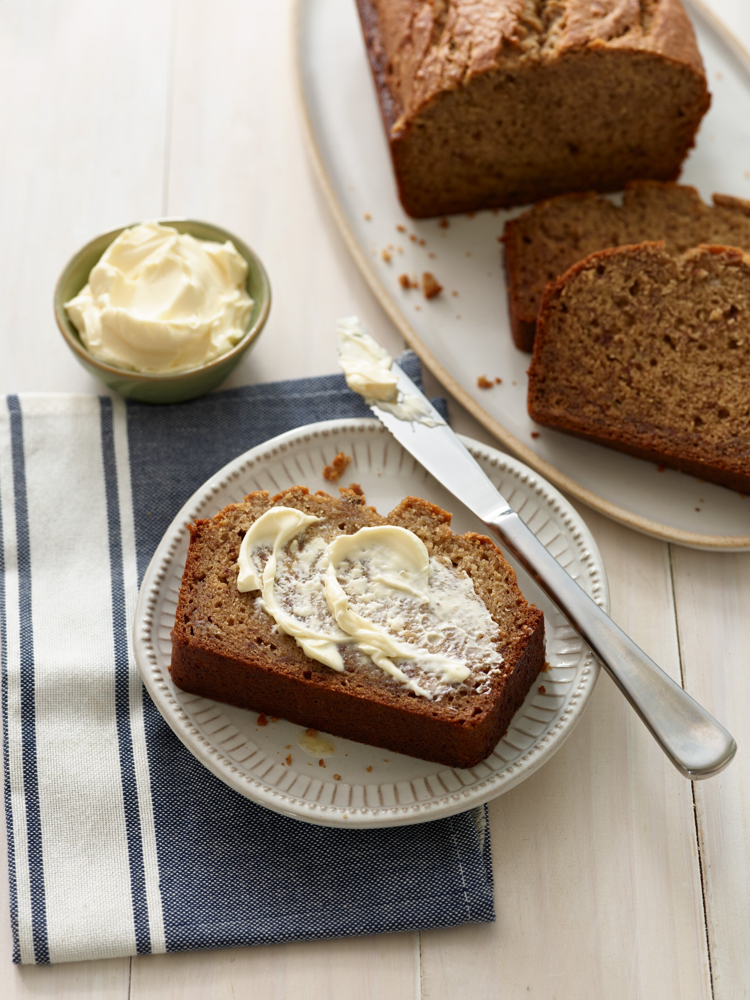

Banana Bread

Description
With a butter spread and the ripe bananas this bread will be sweet and rich.
This bread can be enjoyed with all meals if you so please.
Ingredients
- 3 large ripe bananas, mashed (about 1 1/2 cups)
- 1 cup Country Crock® Spread
- ¾ cup firmly packed light brown sugar
- 2 large eggs
- 1 teaspoon vanilla extract
- 2 cups all-purpose flour
- 1 teaspoon baking soda
- 1 teaspoon ground cinnamon
- ¼ teaspoon salt
Cooking Instructions
- Preheat oven to 350 degrees F. Brush 9 x 5-inch loaf pan with additional Country Crock® Spread; set aside.
- Combine mashed bananas, Country Crock® Spread, brown sugar, eggs, and vanilla in large bowl with wooden spoon. Stir in remaining ingredients until blended. Spoon into prepared pan.
- Bake for 1 hour to 1 hour 10 minutes or until toothpick inserted in center comes out clean. Cool 20 minutes on wire rack; remove from pan and cool completely.